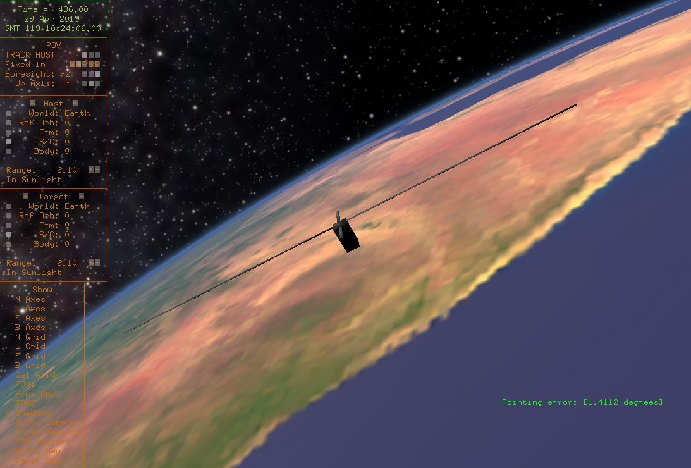

- Generated by
 1.8.15
1.8.15
|
SlugSat ACS
0.2.0
This repository contains source code for the Attitude Control System (ACS) onboard SlugSat.
|
"42" is an open-source flight simulation created by engineers at NASA's Goddard Space Flight Center. The SlugSat Mechanical team uses a modified version of 42 to run hardware-in-the-loop simulations of the Attitude Control System (ACS). Using the instructions below, 42 can be set up to run alongside the flat-sat or other standalone ACS test programs.
SlugSat’s customized version of 42 runs natively on an Ubuntu virtual machine. SlugSat's Team Drive contains a VM with both Mechanical team git repositories initialized and 42 and its dependencies preinstalled. To run the simulation, the user must download and run the VM, pull the latest version of the simulation code to the 42 source folder, and compile and run the simulation from the command line. The steps to do this are as follows:
In the VM, navigate to Desktop/42-source in a terminal and run the commands:
$ git fetch --all $ git reset --hard origin/master
This will pull any changed files from SlugSat's 42 source code repository.
$ sudo make clean $ make
Run the simulation with the command:
$ sudo ./42
Note that superuser is only required to connect to the flat-sat over USB serial, but the simulation will not run without it.
If the flat-sat ACS board (or another STM32 board running a version of the ACS) is not connected, the simulation will run but will not apply any torque to the simulated craft. To control the craft, the simulation must be connected to the ACS software running on an STM32 board.
SlugSat's customized 42 includes the ability to connect to and sync with an STM32 board running SlugSat’s ACS flight software. To run 42 in conjunction with the ACS:
Each time 42 is restarted the microcontroller should also be reset to clear the current ACS state.
The following files in the InOut folder can be edited to change the behavior of the simulation:
On each new run 42 creates a folder beginning with 42run_. This folder is populated with files that log pointing accuracy, used and generated power, reaction wheel speed, and state transitions during current run of 42.
All customized files in SlugSat's version of 42 are stored in the Simulation42 GitHub repository. Other 42 source files are unchanged from the base 42 source (which can be downloaded here).
1.8.15